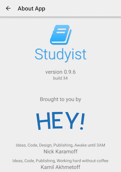
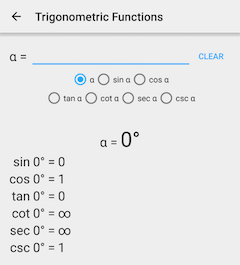

Версия 0.9.6 приложения Studyist
Привет, друзья! Сегодня мы рады представить вам свежую версию нашего приложения Studyist - 0.9.6! Позвольте мне рассказать вам о всех изменениях:
- Добавлены “Тригонометрические функции” (раздел “Геометрия”). Вы можете высчитать все функции угла и даже больше!
- Добавлен пункт “О приложении”. Тут вы узнаете чуть больше о нас и о приложении
- Почищен код проекта, были баги с Gradle
- Убрано меню везде, где не нужно (то есть, просто везде)
Обновление уже доступно на официальном сайте приложения: studyist.nikkeycompany.ru
Увидеть изменения можно на скриншотах:



Оставайтесь с нами, чтобы не пропустить свежайшие новости о нашей компании.